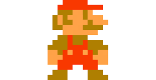

|  |
Super Mario Bros. 2 (Japão) é a continuação natural de Super Mario Bros. Apresenta novos níveis, mantendo o estilo do jogo original. Na tela de título, o jogador deve escolher entre Mario ou Luigi, não existindo o modo para dois jogadores. O jogo introduz algumas novidades como o Cogumelo Venenoso, um cogumelo que fere Mario ou Luigi quando tocado; Warp Zones reversas, que, ao contrário das tradicionais, levam o jogador para estágios anteriores; inimigos com mais habilidades e 5 mundos secretos.
Esse jogo é considerado o mais difícil da série Mario. Por considerar o excessivo nível de dificuldade do jogo frustrante e uma rejeição à diversão, a Nintendo americana resolveu não lançar o jogo nos EUA. Mais tarde, em 1993, o jogo foi lançado como parte da coletânea Super Mario All Stars com o título de Super Mario Bros.: The Lost Levels. |